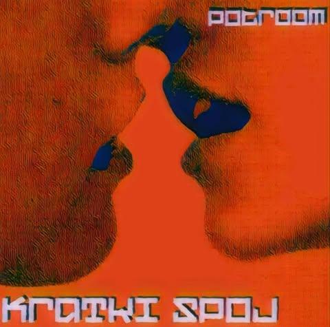
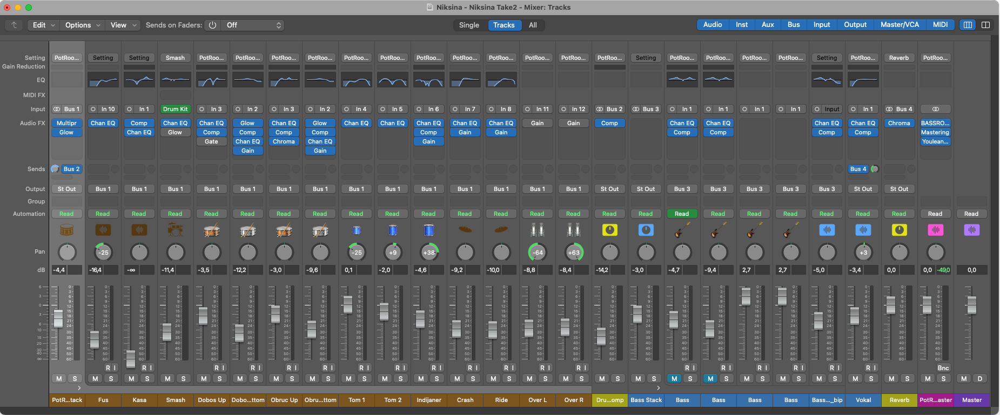
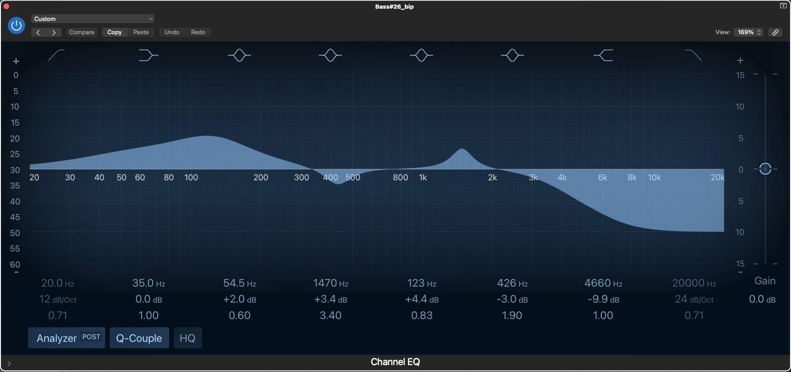
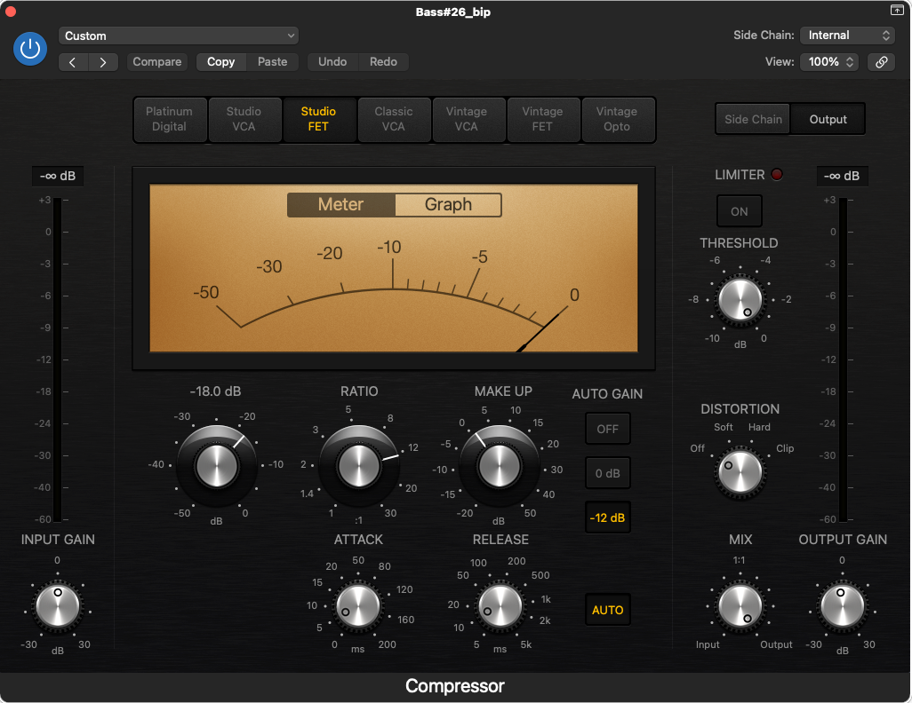
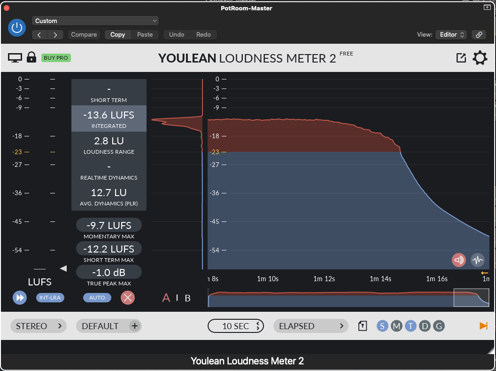

KratKI Spoj
novosti o albumu

O albumu
Naš prvi album "Kratki spoj" nastao je 2025. godine i sadrži 8 pjesama s ukupnim trajanjem od oko 30 minuta. Kroz album ćete proći raznovrsnim žanrovima jer smo ipak melodic punk rock funk bend koji pokušava stvoriti nešto svoje i novo.
Što se tiče samog naziva — "Kratki spoj" — ime je nastalo prirodno tijekom pisanja pjesama, kada smo shvatili da pjesme nemaju neku zajedničku veću priču koja ih sve povezuje. Iz toga je iznikla i glavna pjesma "Kratki spoj", koja se vrti oko čežnje za nedostižnom ljubavi.
Nakon što poslušate neke od naših pjesama, možete pročitati i kratak opis o tome kako je album tehnički nastao — iz perspektive jednog amaterskog studija.
Kratki spoj

Život je sranje
Najpoznatija pjesma Život je sranje spremna je za slušanje.
Kako je album nastao
Rad na albumu počeo je negdje oko 2005. godine i trajao je otprilike pola godine do završetka. Snimali smo u selu Modrušani, uz pomoć tate našeg gitariste Damira koji ima svoj studio opremljen za snimanje više instrumenata odjednom — bubnjeve, gitaru i bas.
Uz njegovu pomoć, snimali smo svaki instrument zasebno u digitalnom obliku, a zatim smo sve to spojili u jednu cjelinu. Što se tiče finalnog proizvoda, moram naglasiti da sam imao iznimno veliku podršku od Damira tijekom cijelog procesa izrade albuma. Kroz brojne prijedloge, savjete i strpljiva objašnjenja vezana uz sam program, pomogao mi je da razumijem stvari koje bi mi inače oduzele puno više vremena. Bez njegovog mentorstva cijeli proces bi bio znatno teži i dugotrajniji.
Program koji sam koristio bio je Logic Pro, a preporučio mi ga je upravo Damir. On se obradom glazbe bavi već godinama i predložio ga je jer ima s njim puno iskustva i smatra ga odličnim alatom za rad. Uz to, mogao me naučiti ponešto o samom programu, što mi je jako pomoglo da se što brže snađem. Logic Pro mi je na kraju bio najpraktičniji za razmjenu datoteka s njim i za normalan tijek rada. Koristio sam razne pluginove i alate za obradu zvuka. Na primjer, EQ za frekvencije basa i gitara kako se ne bi međusobno "gušile", neki bas booster zbog pozadinske buke, te razne kompresore, limitere i efekte.
Svaka pjesma imala je puno kanala. Najveći problem bili su bubnjevi jer su zahtijevali najviše mikrofona — svaki dio kompleta sniman je zasebno pa smo ih onda slagali u slojeve. To je znalo biti malo mukotrpno, ali nam je s druge strane dalo puno više kontrole nad zvukom. Bas i gitare nisu bili neki problem, možda jedino gitarski solaže koje sam morao izrezati i posložiti, ali to je uglavnom prošlo glatko.



